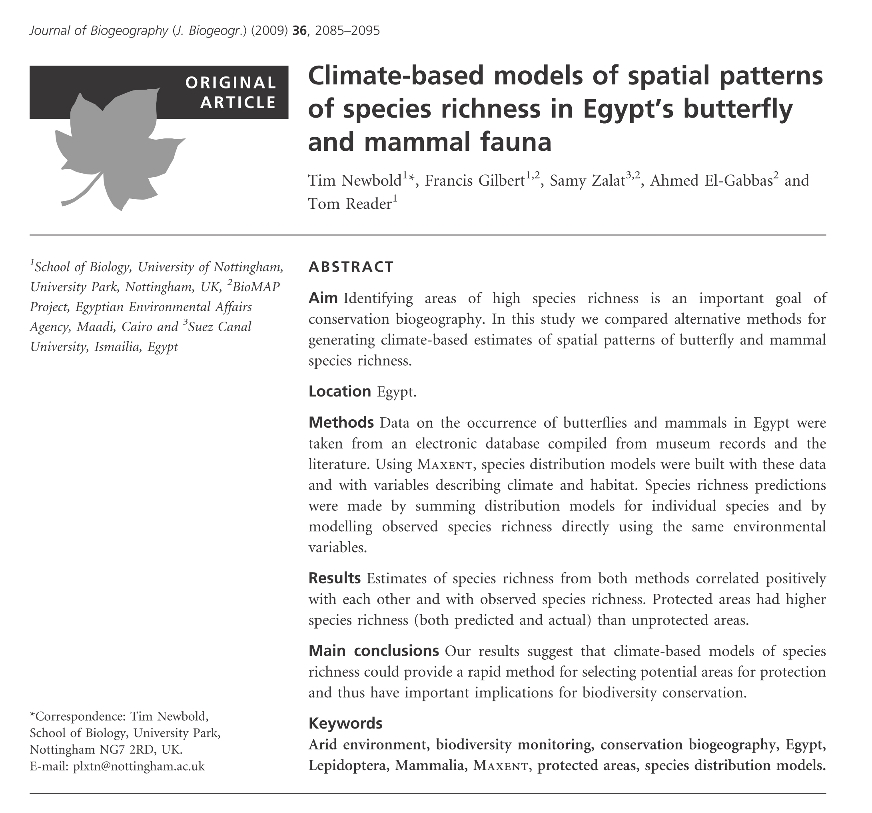

Tim Newbold; Francis Gilbert; Samy Zalat; Ahmed El-Gabbas, Tom Reader (2009). Climate-based models of spatial patterns of species richness in Egypt's butterfly and mammal fauna. Journal of Biogeography 36: 2085-95.
Abstract:
Aim: Identifying areas of high species richness is an important goal of conservation biogeography. In this study we compared alternative methods for generating climate-based estimates of spatial patterns of butterfly and mammal
species richness.
Location: Egypt.
Methods: Data on the occurrence of butterflies and mammals in Egypt were taken from an electronic database compiled from museum records and the literature. Using Maxent, species distribution models were built with these data
and with variables describing climate and habitat. Species richness predictions were made by summing distribution models for individual species and by modelling observed species richness directly using the same environmental variables.
Results: Estimates of species richness from both methods correlated positively with each other and with observed species richness. Protected areas had higher species richness (both predicted and actual) than unprotected areas.
Main conclusions: Our results suggest that climate-based models of species richness could provide a rapid method for selecting potential areas for protection and thus have important implications for biodiversity conservation.
|

|
Download PDF

Supporting Information
|
Tim Newbold, Francis Gilbert, Samy Zalat, Ahmed El-Gabbas, Tom Reader 2009
Climate-based models of spatial patterns of species richness in Egypt’s butterfly and mammal fauna
Journal of Biogeography 36: 2085-95
10.1111/j.1365-2699.2009.02140.x
Abstract
Aim: Identifying areas of high species richness is an important goal of conservation biogeography. In this study we compared alternative methods for generating climate-based estimates of spatial patterns of butterfly and mammal
species richness.
Location: Egypt.
Methods: Data on the occurrence of butterflies and mammals in Egypt were taken from an electronic database compiled from museum records and the literature. Using Maxent, species distribution models
were built with these data and with variables describing climate and habitat. Species richness predictions were made by summing distribution models for individual species and by modelling observed species richness directly using the same environmental
variables.
Results: Estimates of species richness from both methods correlated positively with each other and with observed species richness. Protected areas had higher species richness (both predicted and actual) than unprotected areas.
Main conclusions: Our results suggest that climate-based models of species richness could provide a rapid method for selecting potential areas for protection and thus have important implications for biodiversity conservation.
Introduction
In 2002, the Convention on Biological Diversity adopted the target of significantly reducing the rate of biodiversity loss by 2010. Monitoring biodiversity trends requires knowledge of the distributions of species and of patterns in species
richness. However, such data are limited, especially in the tropics (Anderson et al., 2003) and in arid regions (Stockwell & Peters, 1999).
Using statistical methods to predict the distribution of species is an approach that shows great promise
(Wintle et al., 2005). Distribution models relate known species occurrence data to environmental variables, such as climatic variables and habitat types. Both traditional statistical techniques and newer methods have been shown to model individual
species distributions with a high degree of accuracy (Elith et al., 2006). Some authors have experimented with summing individual predictions of species distributions to estimate species richness. For example, Garcia (2006) produced distribution
models for 267 reptile and amphibian species in Mexico and summed them to produce a prediction of species richness. However, when large numbers of species are involved, summing distribution models to generate species richness predictions may be
time-consuming (Gioia & Pigott, 2000). An alternative approach is to model species richness directly. Whilst there have been many attempts to find climatic and habitat-related determinants of species richness patterns (e.g. Kivinen et al., 2007;
Levinsky et al., 2007), no studies have explicitly compared summed distribution predictions with models of species richness per se, although Gioia & Pigott (2000) used both approaches. Such a comparison will be very useful for conservation biologists
attempting to understand spatial patterns of biodiversity.
Many studies have investigated correlates of species richness, often finding climate variables to be good correlates of observed patterns (e.g. Hawkins et al., 2003). Arid environments
are under-studied in this respect (but see van Rensburg et al., 2002; Schmidt et al., 2008). The mechanistic explanation for these relationships remains a matter of debate, and the conclusions of any study of patterns of species richness are strongly
affected by the spatial scale at which they are conducted (Field et al., 2009). Currie et al. (2004) explored three hypotheses for climate-based patterns in species richness, concerning energy, the climatic tolerance of species and speciation
rates. They did not find unequivocal support for any of these hypotheses in the literature. At broad scales, historical factors (Qian & Ricklefs, 2000) and the distribution of resources (Araújo & Luoto, 2007) may play important roles in determining
species richness. At finer scales, competition (Anderson et al., 2002), metapopulation dynamics (Hanski, 1991) and human disturbance (Uehara-Prado et al., 2007) have also been shown to exert a significant influence on species richness.
Several
studies have shown that butterfly and mammal species richness correlate with climate and habitat variables in temperate and tropical regions, at both local scales (Turner et al., 1987; Kivinen et al., 2007; Kuussaari et al., 2007) and at broader
scales (Nogués-Bravo & Araújo, 2006; Algar et al., 2007; Levinsky et al., 2007). However, to date very few studies have investigated correlates of mammal and butterfly species richness in an arid environment (but for mammals see Andrews & O’Brien,
2000).
In this paper we report the results of a study of butterfly and mammal species richness in Egypt, a country with a typical arid-environment flora and fauna. Egypt has two endemic and two near-endemic butterfly species, and also three
endemic subspecies (Larsen, 1990). The mammal fauna includes four endemic and 10 near-endemic species. We sought to identify environmental correlates of species richness at a local scale in an arid environment. We also asked whether estimates
of the species richness of Egyptian butterflies and mammals derived from models of species richness had a good match with estimates made by summing individual models of the distribution of species, and whether both these estimates matched observed
patterns of species richness.
One application of models of species richness is in assessing the effectiveness of protected areas. Global estimates of the effectiveness of protected areas generally suggest poor coverage of biodiversity (Chape
et al., 2005). Country-level studies have often found species richness to be no higher in protected areas than in unprotected areas (e.g. Pawar et al., 2007; Traba et al., 2007; but see, e.g., Lee et al., 2007). Egypt has 27 current or proposed
protected areas, covering a total of 11% of its land surface (Egyptian Environmental Affairs Agency, 2007). All these have been gazetted since 1983, mostly at the recommendation of scientists familiar with Egypt’s biodiversity. As such, we may
expect them to show better coverage of biodiversity than protected areas in other countries. We tested whether protected areas in Egypt have higher species richness than unprotected areas.
Materials and methods
Species and climate data
Species occurrence data were compiled as part of Egypt’s BioMAP project (see http://www.biomapegypt.org/ for more details). The butterfly dataset consisted of 1898 records for 59 species, mostly from museum specimens and the sparse literature
on Egyptian butterflies (Larsen, 1990; Gilbert & Zalat, 2007). Records were made between the years 1829 and 2006, but most were from the 20th century (see Fig. S1 in Appendix S1 in Supporting Information). All extant specimens in Egyptian collections
were re-identified according to the latest taxonomic opinion; Larsen (1990) had already reviewed and checked most other records. Coverage of Egypt is patchy, but probably fairly representative in the sense that all the main areas where butterflies
occur have been sampled, whilst the huge areas of the Great Sand Sea where no butterflies are thought to occur have not been sampled. The main lacuna in collecting effort is the Qattara Depression in the northern part of the Western Desert.
The mammal data consisted of 4718 records for 103 species, also taken from museum and personal records, unpublished reports and the published literature. Mammal records were made between the years 1580 and 2007, but the majority fell in the second
half of the 20th century (see Fig. S1 in Appendix S1). The identification of every record and Egyptian specimen was checked or rechecked, according to the latest taxonomic opinion (Wilson & Reeder, 2005), by the top mammal taxonomist in Egypt
(Dr M. Bassiouny, Al Azhar University, Cairo). Coverage of Egypt is very good, due to systematic and extensive collecting in the period 1950–80 coupled with careful evaluation of taxonomy (see Osborn & Helmy, 1980).
All locations were mapped
as accurately as possible using a bespoke gazetteer developed by the BioMAP project over 3 years of collating Egyptian biodiversity records. The maximum error of each location was estimated by the point radius method (see Wieczorek et al., 2004)
and excessively inaccurate records rejected.
Climatic predictors were taken from the WorldClim version 1.4 dataset at a resolution of 30 arcsec (c. 1 km) (Hijmans et al., 2005). This source contains 20 variables describing aspects of temperature,
precipitation and elevation. We also used a new Egyptian geological habitat map (hereafter referred to simply as habitat) (A. A. Hassan, unpublished data). Habitat was classified into 11 classes (sea, littoral coastal land, cultivated land, sand
dune, wadi, metamorphic rock, igneous rock, gravels, serir sand sheets, sabkhas and sedimentary rocks) based on remote sensing and extensive ground truthing. In preliminary analyses we also experimented with topographical predictors (slope and
aspect). However, these variables did not significantly improve model accuracy and were excluded from the final analyses.
To ensure that the species records were not environmentally biased, we tested their coverage of the main environmental
gradients. Butterfly and mammal sites were treated separately for this analysis. Four principal component variables based on the 20 climatic and elevation variables were each classified into four categories using Jenks (1967) natural breaks, giving
256 unique combinations of categories (henceforth called areas of climatic space). The number of areas of climatic space that contained at least one survey location was calculated. To estimate the number of areas that would have been visited if
sampling was completely random, we generated 100 sets of random survey points of the same number as the real sampling locations and calculated the number of areas represented. To evaluate the coverage of habitat classes by sampled locations, a
chi-square test was performed to assess whether sites fell into significantly (α = 0.05) different proportions of classes than expected by chance.
Modelling species richness
We modelled the species richness of butterflies and mammals
separately, using two methods. First, we summed predictions of the distribution of individual species, using a resolution of 30 arcsec. We made initial distribution models for the 40 butterfly species and 68 mammal species with at least eight
records of occurrence, using Maxent version 2.3 (Phillips et al., 2006). Maxent is designed for use with species datasets that contain only records of presence (Phillips et al., 2006) and thus may be particularly useful when species data are taken
from museum collections. Maxent attempts to find a probability distribution that is as close to uniform as possible with the constraint that the expected value of each environmental variable (the sum, across all grid cells, of the product of the
probability of occurrence and the value of the environmental variable) must equal the mean value at the presence points (the empirical average). Regularization relaxes this constraint such that the expected value of each environmental variable
may fall within a predefined margin around the empirical average, preventing over-fitting of the model (Dudík et al., 2004). The algorithm runs until improvement in model accuracy at each iteration falls below a set threshold (convergence) or
until a maximum number of iterations have been performed. Full details are given in Phillips et al. (2006). We used the 19 climatic variables, elevation and habitat as predictor variables. Linear and quadratic terms were fitted for continuous
variables. We used default values for all parameters (a regularization value of 1, a convergence threshold of 0.00001, a maximum of 500 iterations and a sample of 10,000 points to characterize the background environment). Ten initial models were
made for each species. For each model, the species data were randomly divided into half for building the model and half for evaluating the model. The accuracy of each model was assessed using the ‘area under the receiver operating characteristic
curve’ (AUC) statistic, as calculated within the Maxent procedure. Following the recommendations made by Swets (1986), we eliminated five butterfly species and seven mammal species with mean AUC scores of
0.7. This left 35 butterfly species,
including one of the two endemic species and both near-endemic species, and 61 mammal species, including three of the four endemic species and five out of 10 near-endemic species.
A single final model was then made for each of the remaining species, again at a resolution of 30 arcsec, using the same modelling protocol, but this time using all presence records. The output of statistical models varies among species according to the
relative numbers of presences and absences in the species data (prevalence) (Manel et al., 2001). Therefore, simply summing the output of individual distribution models may bias estimates of species richness in favour of taxa with many records.
It is better to convert the model output into a binary prediction of presence or absence around a threshold value. Many methods have been proposed for choosing appropriate thresholds. For datasets consisting only of presences, Pearson et al.
(2004) recommended using a threshold that maximizes sensitivity (the percentage of presences correctly predicted as being present at a given threshold). Here we used a threshold that resulted in a sensitivity of 95%. Once the models had been
converted to binary predictions of presence or absence, they were summed across all species to give an estimate of species richness.
The second method of modelling species richness was to model observed species richness values
directly. This part of the study was concerned with the total number of species recorded in each cell rather than individual records of species. Therefore, we used a resolution of 0.5°, because at the finer resolution most cells contained
no records. Observed species richness was calculated from the original survey data in diva-gis 5.2 (http://www.diva-gis.org/). A species was considered present in a cell if it had been recorded at least once. Species richness was modelled
using generalized linear models (GLMs) with the same independent variables as in the species distribution models. Following an inspection of the residuals of a general linear model and consideration of dispersion, the most appropriate family
of GLMs was chosen for each model. The variables were resampled to the coarser resolution using bilinear interpolation. In bilinear interpolation, the values of the four nearest grid cells to the target cell are averaged after being weighted
according to their distance to the target cell. Fitting too many independent variables in GLMs may result in overfitting and the selection of nonsense variables in the final model (Wintle et al., 2005). To avoid these problems, we performed
a principal components analysis (PCA) on the 19 climatic variables and elevation across all 406 of the 0.5° cells. Components with an eigenvalue > 1.0 were retained as new predictor variables. In the GLMs, linear and quadratic terms were fitted
for each of these components. We constructed two separate models of species richness: (1) assuming that cells with no species records had a species richness of zero; and (2) excluding cells with a recorded species richness of zero. In the
first we fitted recorded species richness values of all 406 of the 0.5° grid cells in the study area. We used a GLM with negative binomial errors (NB-GLM) and the log link (Crawley, 2002; Venables & Ripley, 2002). For the second model, since
some cells with a recorded richness of zero may occur simply because they have not been sampled and the results could be biased by the inclusion of false zero values, we fitted the species richness values of 0.5° cells with at least one record
of the taxonomic group in question – 100 cells for butterflies and 196 cells for mammals. A GLM with Poisson errors (P-GLM) and the log link (McCullagh & Nelder, 1989) was used.
Statistical analysis
The agreement between fitted values
of species richness generated using the different methods was tested using Spearman’s rank correlation tests. For comparison, the species richness prediction generated by summing individual distribution models was resampled from its original
resolution of 30 arcsec to a resolution of 0.5° using bilinear interpolation. Thus, all tests compared species richness across all 362 of the 0.5° grid cells with an estimate of species richness by all three models. These comparisons included
cells with no species records; these cells were assumed to have a species richness of zero. We also repeated the same correlation tests using only cells that had at least one record of a species in the group being considered.
We tested
whether Egypt’s protected areas network represented butterfly and mammal species richness well by comparing estimated (using the distribution model-sum method) and observed species richness inside and outside protected areas at 2000 points,
randomly situated in 1-km cells throughout the study area. These points were generated using Hawth’s analysis tools for ArcMap 9.1 (Beyer, 2004). We also compared both estimated and observed richness of endemic and near-endemic species inside
and outside protected areas. For this comparison, we grouped mammals and butterflies because the number of endemic species was small.
The NB-GLMs and P-GLMs were built using the glm (Poisson errors) and glm.nb (negative binomial errors)
packages in R 2.6.1 (R Development Core Team, 2004). For both, a manual backward stepwise selection procedure was used to remove terms that did not significantly improve the deviance explained, until a minimum adequate model was obtained (Crawley,
2002). All other analyses were carried out using spss 15.0 (SPSS Inc., Chicago, USA). The comparison of actual and predicted species richness inside and outside protected areas was undertaken using a Mann–Whitney U-test.
Results
The species occurrence data showed no biases in environmental space that would preclude accurate modelling. Sampled sites covered the full range of values of each of the principal components based on the climatic variables. The butterfly sampling
locations fell into 44 of 256 areas of climatic space, 84.1% of the number expected by chance. Sites that were sampled for mammals covered 76 areas of climatic space, 107.5% of the number expected by chance. Sites for both butterflies and
mammals fell into significantly different proportions of habitat types than expected by chance (χ2 = 1035, d.f. = 9, p 0.001 and χ2 = 2248, d.f. = 9, p 0.001, respectively). For both butterflies and mammals, littoral coastal areas, cultivated
land, wadis (dry desert valleys), areas of metamorphic rock and areas of igneous rock were sampled more often than expected by chance. Sand dunes, gravels, serir sand sheets and areas of sedimentary rock were sampled less often than expected
by chance. Sixty-three of 333 butterfly sites and 200 of 1395 mammal sites fell inside Egypt’s protected areas. A map of Egypt’s protected areas and the sites that were sampled for mammals and butterflies is given in Fig. 1(a).
(a) Sites
where mammals (circles) and butterflies (triangles) were sampled, and the location of Egypt’s protected areas (grey shading). Maps of (b) predicted butterfly and (c) mammal species richness generated by summing individual predictions of the
distributions of species. Lighter tones indicate high predicted species richness and darker tones indicate lower species richness. The distribution predictions were made using Maxent.
The final distribution models (those using all the
species occurrence data) achieved mean AUC values between 0.863 and 0.999 for butterfly species and between 0.831 and 0.999 for mammal species. The average relative contribution of habitat, elevation and the 19 climatic variables to the final
distribution models is shown in Fig. S2 in Appendix S1, and the contributions of variables in the models for each species are given in Appendix S2. Habitat and elevation were important in explaining the distributions of both butterflies and
mammals. Among the climatic predictors, temperature-related variables were more important than precipitation-related variables in determining butterfly distributions, while for mammals, annual and maximum precipitation variables were also
important.
The predictions of species richness made using the first method (summing distribution models for individual species) are mapped in Fig. 1(b,c). The models of species richness generated using this method correlated positively
and significantly with observed species richness (Table 1, Fig. 2a). The second method of estimating spatial patterns of species richness was to model species richness values directly. The PCA of the 19 climatic variables and elevation produced
four components with eigenvalues > 1.0. All original climate variables were represented in at least one of the extracted components (Table S1 in Appendix S1). Scores on the first principal component increased with increasing maximum temperature
and decreasing precipitation annually and at otherwise wet times of year (Table S1 in Appendix S1). The second component increased with increasing annual temperature and increasing temperature during cooler periods of the year. The third component
described increasing elevation, decreasing annual temperature and increasing precipitation at drier times of the year. The fourth component increased with decreasing temperature during dry periods, increasing precipitation (annually and during
cold times of the year) and decreasing minimum precipitation. The models fitting species richness values for all 406 of the 0.5° cells (NB-GLM), which included cells with a recorded species richness of zero, explained 16.3% of the deviance
in the species richness of butterfly species and 21.3% of the deviance in mammal species richness. For butterflies, only the linear term of PC1 (describing mainly precipitation but also maximum temperature) and habitat had a significant effect
on species richness (Table 2). For mammals, habitat, the quadratic term of PC1 and both terms of PC2 (describing several temperature-related variables) and PC4 (describing variables related to extremes of temperature and rainfall) had a significant
effect on species richness (Table 2). Estimated species richness according to the NB-GLMs correlated significantly and positively with observed species richness (Table 1, Fig. 2b). The models fitting species richness values only for 0.5° cells
with at least one species record (P-GLM) explained 19.1% of the deviance in butterfly species richness and 18.3% of the deviance in mammal richness. For butterflies, both terms of PC1 and PC4, the quadratic term of PC3 (high values of which
indicate high-altitude areas with rainfall all year round) and habitat were all significantly related to species richness (Table 3). For mammals, both terms of PC1, the quadratic terms of PC2 and PC4, the linear term of PC3 and habitat were
significant predictors of species richness (Table 3). Species richness estimates from these models also correlated significantly and positively with observed species richness (Table 1, Fig. 2c). Across all 0.5° grid cells, the estimates made
using the different modelling methods correlated significantly with each other (Table 1, Fig. 3).
Table 1. Correlations among fitted values of each of the three models of species richness of butterflies (B) and mammals (M) in Egypt, and
correlations between these fitted values and observed species richness. The three models of species richness were: (1) summed distributions – distribution models were built for each species at 30 arcsec resolution using Maxent, then summed
to estimate species richness; (2) NB-GLM – species richness values of all 0.5° cells were fitted using a generalized linear model (GLM) with negative binomial errors; (3) P-GLM – species richness values of sampled cells were fitted using a
GLM with Poisson errors. Correlations were calculated both for all cells and for sampled cells only. Species richness values cannot be considered independent in the presence of spatial autocorrelation; the effective sample size is reduced
in the presence of such non-independence. Therefore, the minimum sample sizes at which the reported correlation coefficients would remain significant (at α = 0.05) are given in brackets after the correlation coefficient.
Correlations
between observed species richness and predicted species richness of butterflies and mammals in Egypt estimated using each of the three models: (a) predictions of the distribution of each species, produced using Maxent, were summed; (b) recorded
species richness values of all grid cells were modelled using a generalized linear model with negative binomial errors; and (c) recorded species richness values of sampled grid cells were modelled using a generalized linear model with Poisson
errors. Table 2. Results of generalized linear models (GLMs) with negative binomial errors, fitting the observed species richness of butterflies and mammals in Egypt of all 0.5° grid squares as the dependent variable, with habitat and four
bioclimatic principal component axes (linear and quadratic terms) as independent variables. Significant terms are shown in bold. LR, likelihood ratio.
Table 3. Results of generalized linear models (GLMs) with Poisson errors, fitting the
observed species richness of butterflies and mammals in Egypt of sampled 0.5° grid cells only (i.e. excluding zero values), with habitat and four bioclimatic principal component axes (linear and quadratic terms) as independent variables. Significant
terms are shown in bold.
Correlations between the different models used to predict species richness patterns of butterflies and mammals in Egypt: (a) between the sum of individual species distribution models and the generalized linear
model with negative binomial errors (NB-GLM) of species richness values; (b) between the sum of individual species distribution models and the generalized linear model with Poisson errors (P-GLM) of species richness values; and (c) between
the NB-GLM and P-GLM models of species richness values. y = x lines are shown for reference.
Observed mammal and butterfly species richness values correlated significantly with each other at sites where at least one butterfly species
and one mammal species had been recorded (rs = 0.615, n = 97, p 0.001). Predicted species richness (estimated using the distribution model-sum method) also correlated strongly and significantly between butterflies and mammals (rs = 0.920,
n = 362, p 0.001).
Across a random sample of 2000 1-km grid cells, predicted species richness, estimated by summing individual modelled species distributions, of both butterflies (Mann–Whitney test: U = 76,100, n = 1995, p 0.001) and
mammals (Mann–Whitney test: U = 70,300, n = 1995, p 0.001) was significantly higher inside protected areas than outside (Fig. 4a). The observed species richness was also significantly higher inside protected areas than outside for both butterflies
(Mann–Whitney test: U = 111,000, n = 1995, P = 0.016) and mammals (Mann–Whitney test: U = 80,700, n = 1995, p 0.001) (Fig. 4b). Predicted (Mann–Whitney test: U = 105,000, n = 1963, P = 0.028) and observed (Mann–Whitney test: U = 102,000, n
= 1963, P = 0.001) richness of endemic and near-endemic species (mammals and butterflies combined) was significantly higher inside protected areas than outside.
(a) Comparison of predicted species richness (mean ± SE) of butterflies and
mammals in Egypt, estimated by summing individual species distribution models, between protected areas and unprotected areas. (b) Comparison of observed species richness (mean ± SE) between protected areas and unprotected areas.
Discussion
We found significant relationships between species occurrence, species richness and the climate and habitat variables that we used. Beale et al. (2008) found that relationships between species occurrence and environmental variables were
no better than expected by chance. However, we found that habitat and climate variables both had a significant effect on butterfly and mammal distributions, and on patterns of species richness, at least at the local scale at which we carried
out this study. This finding is consistent with previous studies of butterflies and mammals, where climate and habitat have been identified as good predictors of richness, both at continental and at local scales (e.g. Nogués-Bravo & Araújo,
2006; Algar et al., 2007; Kivinen et al., 2007; Levinsky et al., 2007). The association with habitat may reflect the effect of variation in plant communities on animal species distributions. Butterflies and herbivorous mammals are directly
dependent on plants for food, whilst other mammal species may rely on certain vegetation types indirectly, for example through the availability of herbivorous prey. Temperature variables appear to have a particularly strong effect on butterfly
species, although causality cannot be inferred from correlative models. Similar relationships have been noted before (Turner et al., 1987) and could be brought about by direct effects of temperature on thermoregulation, or indirectly through
climate-driven variation in habitat diversity or plant productivity.
Many other factors in addition to climate may affect species richness, including competition (Anderson et al., 2002), the availability of host plants (Araújo & Luoto,
2007), metapopulation dynamics (Hanski, 1991), human disturbance (Uehara-Prado et al., 2007) and other environmental variables such as soil type (Kuussaari et al., 2007), although some of these factors are likely to play a role in determining
species richness only at larger spatial scales than were studied here (Whittaker et al., 2001). Given all these non-climatic determinants of species richness patterns, it is not surprising that only a relatively low proportion of the variation
in species richness was explained by the models, and that the correlations between modelled and observed species richness were only moderately strong. Some progress is being made towards including factors other than climatic ones in species
distribution models (e.g. Araújo & Luoto, 2007) and this must remain a priority for improving the accuracy of predictions. However, the need to identify areas to conserve is urgent and we cannot wait to act until the most accurate models possible
have been built for every species. Climate-based models match observed distributions well and are quick and easy to build for a large number of species.
Another reason for the relatively low explanatory power of the models may be that
species inventories in sampled cells were incomplete. This seems likely, given that it may be necessary to visit a site many times before absence can be inferred with confidence (MacKenzie et al., 2002). In the case of the NB-GLMs, the inclusion
of cells with no records of species presence may have introduced false absences to the models. This is especially likely for the butterfly models, because surveying was less extensive. Ground-truthing will be required to assess the extent
to which mismatches between modelled and observed species richness are due to incomplete inventories or to errors in the models.
Across all grid cells in the study area, the three methods produced models that showed positive correlations
with observed species richness and with each other, suggesting that they could all be used to predict the species richness of unknown areas from limited data on the distributions of species, an application that would be of great value for
conservation. There were some differences among the models though. Species occurrence and richness data often contain many absences or zero values, especially datasets for small or cryptic species with a low probability of detection (MacKenzie
et al., 2002). This can bias the parameter estimates of statistical models (Martin et al., 2005). The weaker correlations between observed species richness and species richness estimated using the NB-GLMs (those that included cells with recorded
species richness of zero), especially for butterflies, may be caused by the inclusion of false absences. This conclusion is further supported by the observation that the NB-GLMs produced much lower estimates of species richness than the other
two methods (see Fig. 3). The mammal data covered a much larger proportion of both geographical and environmental space than the butterfly data, suggesting that recorded species richness values of zero were more reliable.
Summing the
individual distribution models produced the best estimates of species richness. The relationship between predicted and observed species richness across sampled cells was slightly weaker for butterflies, which may be a result of model bias
caused by false absence records. This would be concerning, given that Maxent is designed to be used with datasets containing only presences (Phillips et al., 2006) and is a possibility that deserves further attention. However, for both butterflies
and mammals, summing distribution models produced the estimates of species richness that matched observed species richness most closely. The P-GLM models, which did not include cells with a recorded species richness of zero, generated more
accurate estimates of species richness than the NB-GLM models. GLMs are quick and easy models to build, making them a good first choice for modelling species richness patterns.
Some previous work has indicated good spatial agreement among
different groups in their species richness at regional scales (Qian, 2007), although a global study of bird, mammal and amphibian species richness found the converse (e.g. Grenyer et al., 2006). The results of this study show that, at least
at a local scale within a single country, butterfly and mammal diversity correlate strongly and positively.
In contrast to the findings for many other countries and taxonomic groups (e.g. Evans et al., 2006; Pawar et al., 2007; Traba
et al., 2007), Egypt’s protected areas network seems to be effective in representing butterfly and mammal diversity. In many parts of the world, protected areas have historically included land that has relatively little commercial value; such
areas do not necessarily represent the best choice in terms of conserving biodiversity (Margules & Pressey, 2000). Egypt’s protected areas network is relatively new and the areas were chosen with the aid of knowledge about the country’s biodiversity.
Given such knowledge, and the ability to overcome conflicting interests over land use, it seems that good coverage of biodiversity can be achieved. On the other hand, large areas of the Nile Valley and Delta were predicted to have relatively
high butterfly diversity but are not yet protected, suggesting that although great progress has been made towards protecting species-rich areas, more could still be done. The Nile Valley contains land of high economic value, and setting aside
areas to be protected may present a challenge. It is important to note that species richness is only one measure of the importance of conserving different areas. Some authors have suggested using taxonomic uniqueness (e.g. Kershaw et al.,
1995), complementarity (Margules & Pressey, 2000) or threat (Wilson et al., 2007) instead. Many of Egypt’s endemic and near-endemic mammal and butterfly species were included in the models and the richness of endemic and near-endemic species
was higher inside protected areas than outside, but a more comprehensive assessment of the protected areas should consider a number of different criteria.
In summary, we have shown that seemingly accurate estimates of species richness
can be made using patchy, incomplete data, allowing us to predict the species richness of sites that have not been surveyed. The three models of species richness were largely similar, although the model based on individual distribution models
produced the most consistently accurate results. A similar comparison of the same three models in different regions and for different species would be useful in establishing the general reliability of the approach. Models based on species
richness itself, rather than individual species distributions, may be useful when species identity is unknown, for example when using species richness estimators. The results are important for conservation, given the urgency with which we
must identify areas that need to be protected, although similar comparisons of species richness models for more taxonomic groups and for a broader geographical region would be useful.
Acknowledgements
We thank the Italian Cooperation
(Debt for Development Swap) for funding the BioMAP Project; Mustafa Fouda (Director of the Nature Conservation Sector, Egyptian Environmental Affairs Agency) for facilities and comments on the work; all the BioMAP staff (Ahmed Yakoub, Alaa
Awad, Muhammed Sherif, Shama Omran, Shaimaa Esa, Yasmin Safwat, Nahla Ahmed, Esraa Saber); Mohamed Basuony and Abd El Aal Attia for help during dataset preparation and preliminary analysis; and Richard Field and four anonymous referees for
valuable comments on an earlier draft. This work was supported by the Natural Environment Research Council (grant number NER/S/A/2006/14170).
Biosketch
The behavioural ecology group at Nottingham University (see http://www.nottingham.ac.uk/~plztr/groupsite/)
studies a wide range of topics including conservation ecology and biodiversity. BioMAP (http://www.biomapegypt.org/) spent 3 years gathering species records from museums, natural history collections and the literature, compiling them into
an electronic database. It also promoted wildlife conservation in Egypt. The second part of the BioMAP project will commence this year.